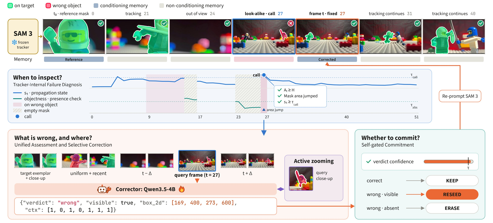
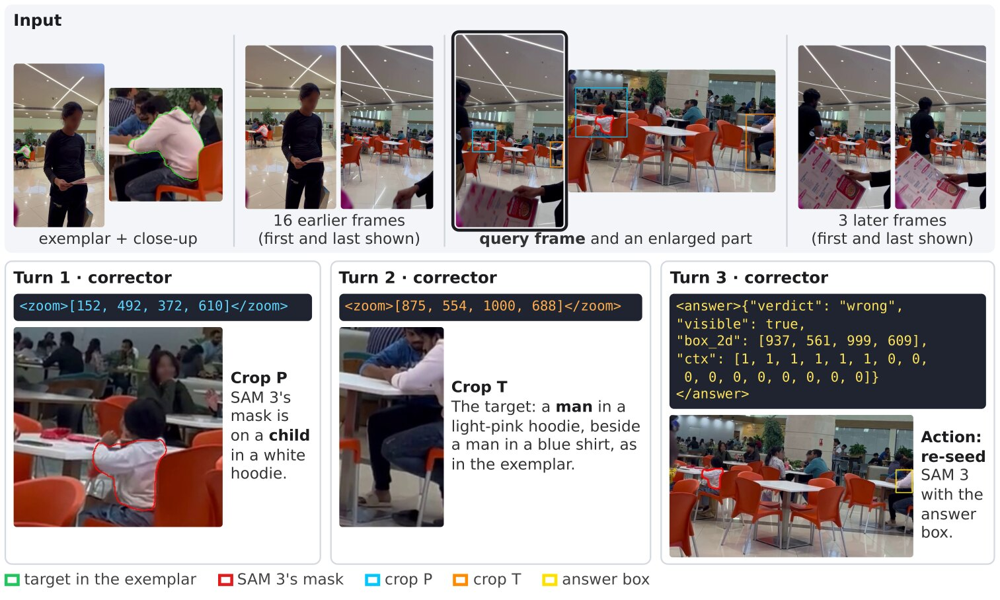
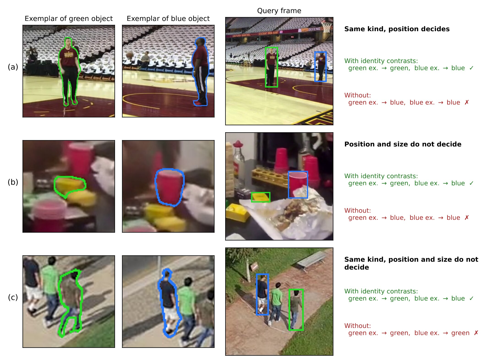
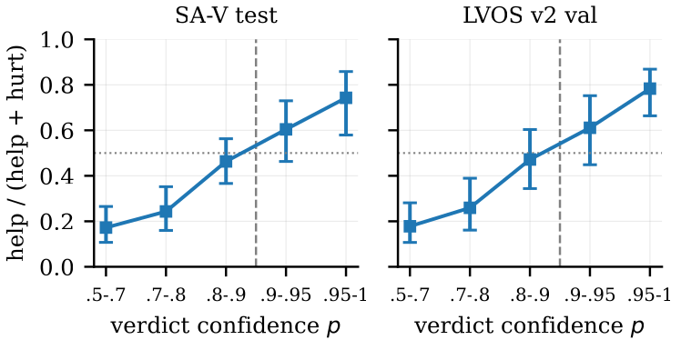
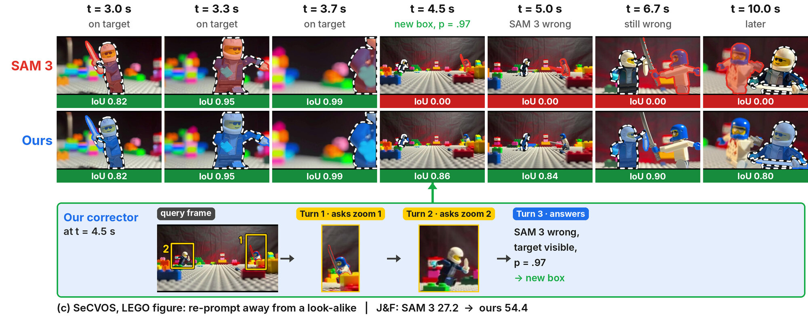
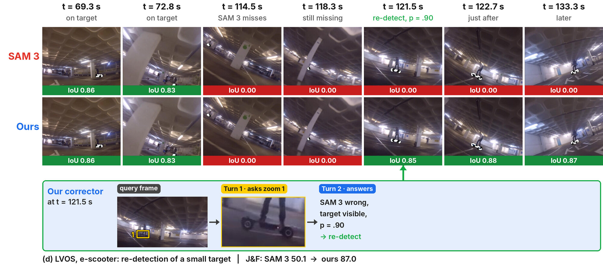

VIGIL lets a tracker notice its own failures, look closer, and fix them only when it is sure.
Every correction is written into the tracker's memory. Correcting blindly can make a strong tracker worse.
SAM 3 stays frozen. VIGIL only watches it and, when sure, re-prompts it.
Watch SAM 3's own signals over time.
One VLM zooms in and proposes a fix.
Only if the VLM is confident.

A wrong track can stay confident, and a correct one can look uncertain. VIGIL watches two kinds of evidence and calls the VLM only when they build up. Training-free; adds 18 ms per frame.
memory and backward checks: one extra SAM 3 decoder pass each · reveal errors SAM 3's confidence misses
Inspections that land on a failure (%).
Recall within 1 s of failure onset (%).
Closed loop, oracle corrector: updates on failures (%).
One Qwen3.5-4B VLM judges and fixes in a single answer.

Target: 0.3% of the frame. Zoom 1: SAM 3 is on a child. Zoom 2: the target, as in the exemplar. Answer: re-seed.
Identity test passed (%), with vs without contrasts.
J&F of the gated corrector after each training stage.
39 of 45 re-detections from a crop help (LVOS and SA-V).

Identity test: same frames, two exemplars. With identity contrasts the choice follows the exemplar; without, it often picks the same object for both.
The same corrector, with and without its confidence gate.
J&F. Gate: apply a fix only if confidence p ≥ 0.9.

The share of helpful fixes rises with confidence. Dashed: the gate.
Help-vs-hurt AUROC of the confidence p. Line: chance (0.5).
Calibration error (ECE) of p, lower is better.
The gain grows with every scene change, where a tracker's memory breaks.
Axis starts at 60.
| Method | J&F | J | F |
|---|---|---|---|
| SAM-based trackers | |||
| SAM 2.1 | 79.6 | 76.1 | 83.2 |
| SAMURAI | 80.0 | – | – |
| SAM2Long | 81.2 | 77.6 | 84.9 |
| SeC | 81.7 | – | – |
| SAM 3 | 84.4 | 80.4 | 88.4 |
| Self-correcting trackers | |||
| Dual-Agent | 81.7 | 77.8 | 85.7 |
| VIGIL (ours) | 85.6+1.2 | 81.5 | 89.6 |
| Method | J&F | J | F |
|---|---|---|---|
| SAM-based trackers | |||
| SAM 2.1 | 84.1 | 80.7 | 87.6 |
| SAMURAI | 84.2 | – | – |
| SAM2Long | 85.9 | 82.4 | 89.6 |
| SeC | 86.5 | – | – |
| SAM 3 | 88.2 | 84.4 | 92.2 |
| Self-correcting trackers | |||
| Dual-Agent | 89.4 | 85.4 | 93.4 |
| VIGIL (ours) | 89.8+1.6 | 85.7 | 93.8 |
| Method | 0 changes | 1 change | ≥ 2 changes | Overall |
|---|---|---|---|---|
| SAM-based trackers | ||||
| SAM 2.1 | 79.4 | 58.5 | 52.4 | 58.2 |
| SAMURAI | 81.8 | 60.6 | 59.3 | 62.2 |
| SAM2Long | 81.3 | 61.8 | 58.5 | 62.3 |
| SeC | 84.2 | 69.6 | 67.5 | 70.0 |
| SAM 3 | 87.1 | 74.6 | 69.3 | 74.2 |
| Self-correcting trackers | ||||
| Dual-Agent | 88.1 | 76.2 | 73.4 | 76.9 |
| VIGIL (ours) | 87.4 | 80.7 | 77.1+7.8 | 79.5+5.3 |
| Method | J&F | J | F |
|---|---|---|---|
| Trackers | |||
| SAM 2.1 | 59.4 | 58.3 | 60.6 |
| SAAS | 62.0 | 60.5 | 63.6 |
| SAM 3 | 72.9 | 71.1 | 74.8 |
| Self-correcting trackers | |||
| Dual-Agent | 72.7 | 70.8 | 74.7 |
| VIGIL (ours) | 75.8+2.9 | 73.9 | 77.6 |
Green: gain over SAM 3.
Same detector and corrector, no retraining. SeCVOS J&F.
No retraining: VIGIL acts only through prompts.
Seconds per video on SA-V test, one RTX PRO 6000.
Fits a single 24 GB GPU (18.4 vs 47.1 GiB).

Look-alike switch. After a cut, SAM 3 follows the other LEGO figure. Two crops tell them apart, and VIGIL re-seeds on the target. J&F 27.2 → 54.4

A target of 0.2% of the frame. SAM 3 loses the e-scooter; one crop resolves it and VIGIL re-detects it. J&F 50.1 → 87.0
More videos: the VLM's dialogue on top, the IoU timeline below.
@article{bundele2026vigil,
title = {Evidence-Driven Failure Diagnosis and Recovery for Video Object Segmentation},
author = {Bundele, Valay and Agrawal, Susmit and Hosseinzadeh, Mehran and Lensch, Hendrik P. A.},
journal = {arXiv preprint},
year = {2026}
}